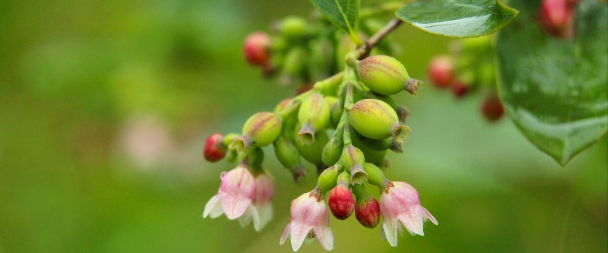
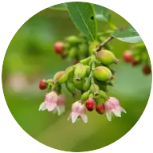
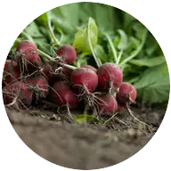
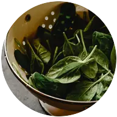
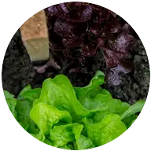
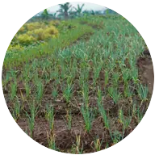
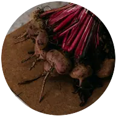

When to plant huckleberries in Bend and Redmond, OR
Plant evergreen huckleberry shrubs in Bend and Redmond Apr 28 – Jun 23.
- Difficulty
- Moderate
- Sun
- Part shade to full sun
- Spacing
- 3 to 5 feet apart
- Planting depth
- Same depth as in the pot
- Frost
- Hardy perennial; comes back every year
- First harvest
- Light crops after two to three years; plants are slow to start
Why these dates
Bend and Redmond's typical last spring frost is June 9. As a hardy perennial, this crop can go in about 6 weeks before that.
High desert and mountains. Central and high eastern Oregon. Frost is possible almost any month. Use row covers, wall-o-water or cloches for warm crops, and choose short-season varieties.
How to grow huckleberries in Bend and Redmond
- Pick a sunny spot with soil that drains well, and mix in an inch or two of compost.
- Plant evergreen huckleberry shrubs Apr 28 – Jun 23, 3 to 5 feet apart. Same depth as in the pot.
- Mulch with bark or fir needles, water through the first two dry seasons, and feed lightly with a fertilizer for acid-loving plants. No pruning needed beyond shaping.
- Harvest: Pick evergreen huckleberries from late August into fall, when they're fully dark and come off easily. They hang on the shrub for weeks.
Key numbers
- 4.5–5.5 (acidic)Soil pH
- 2–3 yearsFirst light crop
- Late August into fallHarvest
- Heavy or alkaline soilBiggest risk
Growing notes
What makes the difference in Northwest gardens, in plain language.
Which huckleberry to grow
Evergreen huckleberry is the native that thrives in gardens west of the Cascades. It's a handsome shrub with glossy leaves, pink bell-shaped flowers in spring and small, dark, sweet-tart berries from late August into fall. Thunderbird is a compact selection for smaller spaces.
Red huckleberry grows wild in shady forests, often sprouting from old stumps and logs, and has bright red, tart berries in summer. The mountain huckleberries people pick in the Cascades grow at higher elevations and rarely do well in lowland gardens.
Planting like a forest floor
Huckleberries are relatives of blueberries and want the same conditions: acidic, well-drained soil full of organic matter. In the wild they grow in loose, needle-covered soil under conifers. Mix bark fines or compost into the planting area, and mulch with bark or fir needles to keep roots cool and moist.
They're slow to establish, so be patient. Water through the first two dry seasons, and feed lightly with fertilizer for acid-loving plants in spring. Heavy clay or alkaline soil is the main reason they stall.
Wildlife value
Evergreen huckleberry is a favorite with birds, which eat the berries well into winter, and the spring flowers feed native bees and hummingbirds. Its year-round foliage gives cover for small birds. It works well as an informal hedge or under tall trees in light shade, and it needs almost no pruning beyond the occasional shaping. If you share the berries, plant a few shrubs so there's enough for both you and the birds.
Common questions
When is the last frost in Bend and Redmond, OR?
Typically June 9. In 9 years out of 10, frost is over by June 26. These are 1991–2020 NOAA climate normals for Redmond Roberts Field.
Is it too late to plant huckleberries in Bend and Redmond?
The spring planting window runs through June 23. Potted plants can still go in later if you water them faithfully through their first summer.
How long until I can pick huckleberries?
Light crops after two to three years; plants are slow to start. Pick evergreen huckleberries from late August into fall, when they're fully dark and come off easily. They hang on the shrub for weeks.
Can you grow huckleberries in your yard?
Yes, especially evergreen huckleberry west of the Cascades. Give it acidic, well-drained soil rich in organic matter, part shade to sun, and water for the first two summers. Mountain huckleberries are much harder to grow at low elevation.
Are huckleberries the same as blueberries?
They're close relatives in the same plant family and like the same acidic soil. Huckleberries are usually smaller and more intensely flavored.
When are evergreen huckleberries ripe?
From late August into fall, when the berries are fully dark and come off easily. They hang on the shrub for weeks, so you can pick a little at a time.
Also plant in Bend and Redmond around the same time
- Peas

Radishes
Spinach
Lettuce
Onions- Carrots

Beets Kale
Kale
Planting dates for huckleberries in nearby areas
- Klamath Falls, OR Apr 28 – Jun 23
- Burns, OR Apr 30 – Jun 25
- Prineville, OR Apr 20 – Jun 15
- Madras, OR Apr 20 – Jun 15
- Lakeview, OR Apr 23 – Jun 18
- Baker City, OR Apr 20 – Jun 15
Full planting calendar for Bend and Redmond · Huckleberries in every city